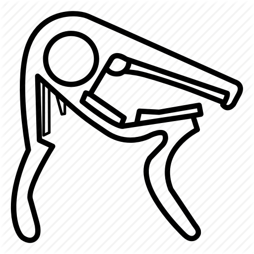

<nav class="navbar navbar-expand-lg navbar-light" style="background-color: #F5DEB3;">
  <a class="navbar-brand" routerLink="/">
    
    Capo Calculator
  </a>
  <button class="navbar-toggler" type="button" data-toggle="collapse" data-target="#navbarNavDropdown" aria-controls="navbarNavDropdown" aria-expanded="false" aria-label="Toggle navigation">
    <span class="navbar-toggler-icon"></span>
  </button>
  <div class="collapse navbar-collapse" id="navbarNavDropdown">
    <ul class="navbar-nav">
      <li class="nav-item">
        <!-- <a class="nav-link" href="#">Discovery Mode <span class="sr-only">(current)</span></a> -->
        <a class="nav-link" routerLink="/discovery">Discovery Mode</a>
      </li>
      <li class="nav-item">
        <a class="nav-link" routerLink="/clean">Clean Mode</a>
      </li>
      <li class="nav-item">
        <a class="nav-link" href="#">How To's</a>
      </li>
      <li class="nav-item">
        <a class="nav-link" href="#">Capo Charts</a>
      </li>
      <!-- <li class="nav-item dropdown">
        <a class="nav-link dropdown-toggle" href="#" id="navbarDropdownMenuLink" role="button" data-toggle="dropdown" aria-haspopup="true" aria-expanded="false">
          Dropdown link
        </a>
        <div class="dropdown-menu" aria-labelledby="navbarDropdownMenuLink">
          <a class="dropdown-item" routerLink="/discovery">Discovery Mode</a>
          <a class="dropdown-item" routerLink="/clean">Clean Mode</a>
        </div>
      </li> -->
    </ul>
  </div>
</nav>
